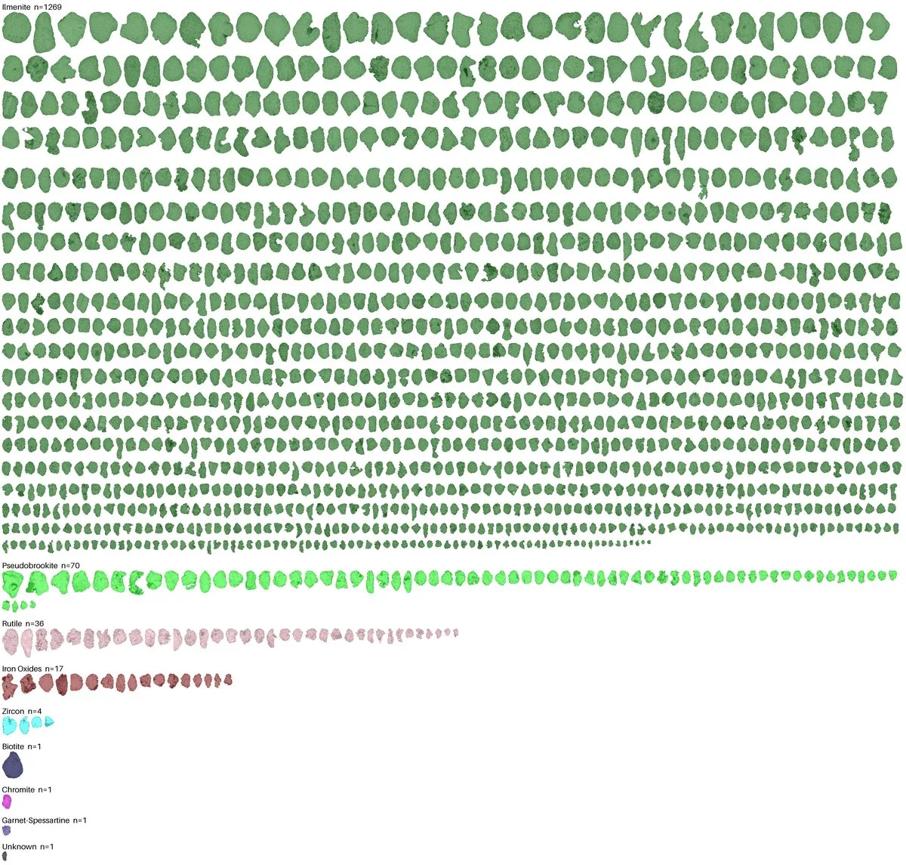
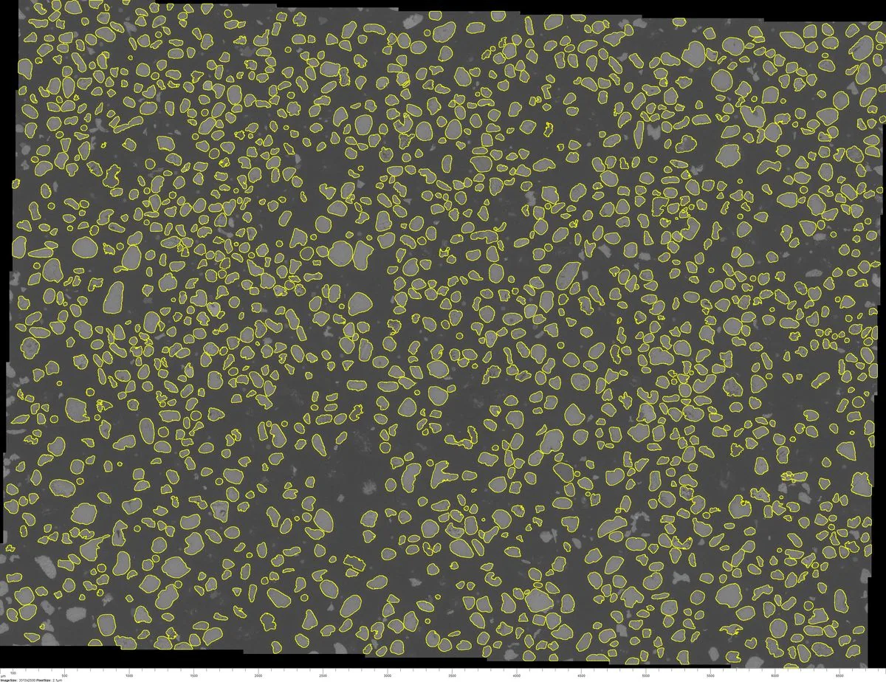
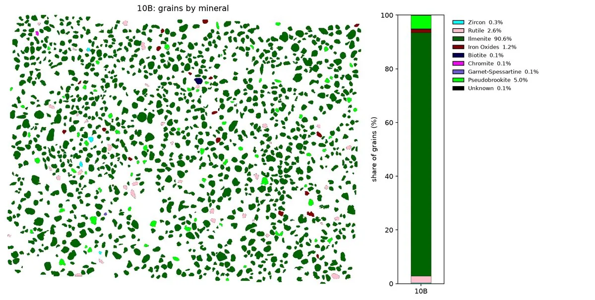
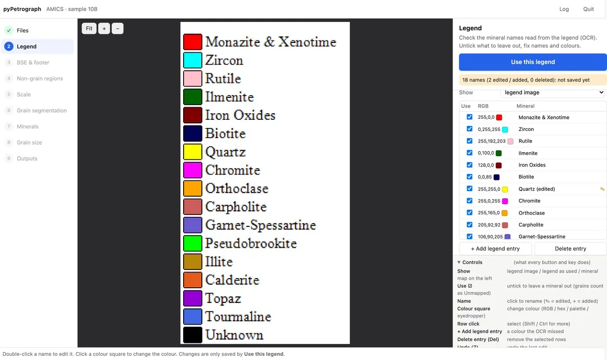
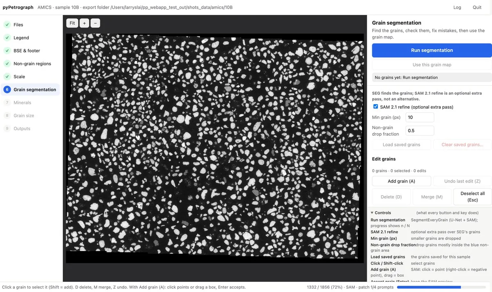
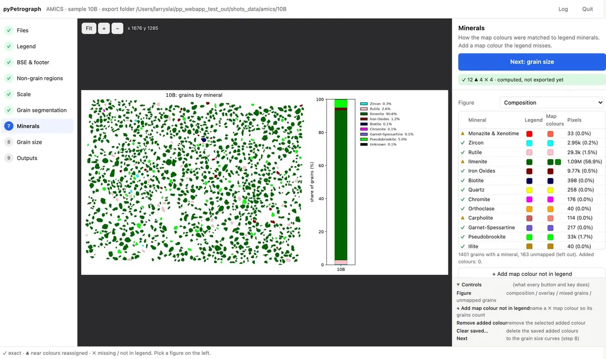

Python · Thin-section petrography
pyPetrograph
pyPetrograph is a machine-learning toolkit for thin-section petrography.
- Version0.2.0
- Python3.10 to 3.12
- LicenseAGPL-3.0 or later
Overview
pyPetrograph helps measure what is in a thin-section photo. You can paint a few examples of each feature on a photo and let a pixel model map the area percent of each class (pore area as porosity in the demo). You can count grains on a painted mineral map by matching a color legend. You can stack plane- and cross-polarized images of the same field and outline grains from that stack. Or, from an automated-mineralogy (AMICS) set of a backscatter image, a mineral map, and a legend, you can outline every grain and name it from the map.
A browser app runs the AMICS workflow step by step on a local page in your web browser (nothing is uploaded), so you can see and fix each result before you export. Notebooks and numbers can change between versions. Grain outlining uses SegmentEveryGrain by Zoltan Sylvester, installed separately.
Larry Syu-Heng Lai develops pyPetrograph. Part of the first notebook grew from early code by Zoltan Sylvester. The project started as a collaboration with Priyanka Periwal, Lucy Tingwei Ko, Kelly Hattori, and Amanda Calle.






Browser app
Start it with pypetrograph-app (or its alias pypetrograph-web). It walks through the AMICS workflow: files, legend, image and footer, non-grain regions, scale, grain outlines, minerals, grain size, and outputs. Nothing is saved until you press an export button, and the exports match notebook 4 exactly.




Key features
Hand labels and area percent
Paint a few examples of each class, and a LightGBM pixel model maps the photo and reports the area percent of each class.
Grain counts on a mineral map
Match pixels to a color legend, split grains that touch, and count the grains in each class.
Grains from stacked images
Line up plane- and cross-polarized views of one field and outline grains from the stack.
AMICS workflow and browser app
Read the legend, outline grains on the backscatter image, name each grain from the mineral map, and export counts, grain sizes, figures, and a knolling sheet.
Installation
Needs Python 3.10 to 3.12. Install from PyPI (this includes the browser app; about 930 MB in total):
pip install pyPetrographGrain outlining needs SegmentEveryGrain, installed separately into the same environment:
pip install segmenteverygrainWithout it, everything else still works, and the app greys out the outlining step. Then start the app:
pypetrograph-appLicense and citation
Cite
Lai, L.S.-H. (2026) pyPetrograph, Zenodo, https://doi.org/10.5281/zenodo.23659316.
GNU Affero General Public License 3.0 or later. The license file is in the repository.
How it works
Hand labels and area percent
pyPetrograph_1_rgb_porosity.ipynb is the labeling demo. You paint a few examples of each feature you care about (pores, grains, cement, and so on), using color, edge sharpness, and microtexture. A LightGBM pixel classifier learns those examples. Random forest or XGBoost can be used instead. The model maps the rest of the photo and reports the area percent of each class with a confidence range. In the demo, pore area is the porosity.
Grain counts on a mineral map
pyPetrograph_2_mineralmap_count.ipynb starts from a color mineral map, one flat color per mineral, plus a legend. It matches pixels to the legend, splits grains that touch, and counts grains in each class.
Grains from a multi-image overlay
pyPetrograph_3_multimodal_grains.ipynb is for contacts that one illumination misses. A boundary drawn from plane-polarized light alone can skip a contact that appears only under crossed polars, and the reverse is true as well. The notebook aligns the two views of the same field and stacks them. Grain outlines then proceed in this order:
- Watershed. A first guess from brightness, with no training.
- SegmentEveryGrain mask. An optional U-Net. That saved mask is the training target.
- N-channel U-Net. About 25 MB, already stored as
outputs/models/grain_unet_ppl-xpl.keras, trained on the stacked plane- and cross-polarized images to copy the SegmentEveryGrain mask. The notebook loads that model. It does not train it again.
GrainPlot is a further optional check window. SAM 2.1, about 860 MB and off by default, is only for still finer shapes.